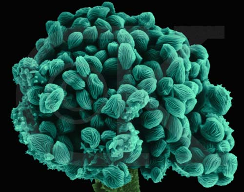

Body Plans and Nutritional Mode | Classification of Fungi | Chytridiomycota | Zygomycota
Ascomycota | Basidiomycota | Lichens and Mycorrhizae | Learning Objectives | Terms
Fungi are almost entirely multicellular (with yeast, Saccharomyces cerviseae, being a prominent unicellular fungus), heterotrophic (deriving their energy from another organism, whether alive or dead), and usually having some cells with two nuclei (multinucleate, as opposed to the more common one, or uninucleate, condition) per cell. Ecologically this kingdom is important (along with certain bacteria) as decomposers and recyclers of nutrients. Economically, the Fungi provide us with food (mushrooms; Bleu cheese/Roquefort cheese; baking and brewing), antibiotics (the first of the wonder drugs, penicillin, was isolated from the fungus Penicillium), and crop parasites (doing several million dollars per year of damage). Fungi are also important aiders of plant root function, as mycorrizhae. Examples of this diverse group are shown in Figure 1.
Figure 1. Examples of fungi.
These images are from http://www.cinenet.net/users/velosa/thumbnails.html.
The evolution of multicellular eukaryotes increased the size and complexity of organisms, allowing them to exploit the terrestrial habitat. Fungi first evolved in water but made the transition to land through the development of specialized structures that prevented their drying out. First classified as plants, fungi are now considered different enough from plants to be placed in a separate kingdom, and in fact are more like animals than plants.
Fungi contain unicellular, multinucleate, and multicellular forms.They are classified on the basis of their reproductive spores and the nature of their multinucleate or multicellular filaments known as hyphae. The structure of Penicillium is shown in Figure 2. Fungal cells have cell walls containing the carbohydrate chitin. Chitin also occurs in the exoskeletons of the animal phylum arthropoda.
Figure 2. SEM image (color added) of
fungal mycelium with
hyphae
(green),
sporangia
(orange) and
spores
(blue), Penicillium sp. (SEM x1,560).
This image is copyright Dennis Kunkel at
www.DennisKunkel.com,
used with permission.
Fungi are absorptive heterotrophs: they break down food by secreting digestive enzymes onto a substrate and then absorb the resulting small food molecules. Fungal hyphae have a small volume but large surface area, enhancing the fungal absorptive capacity. Excess sugar is stored as the polysaccharide glycogen. This is also the storage product for sugars in animals.
Fungal hyphae are collectively termed a mycelium. Some fungi are saprophytes, they obtain their food from the decaying bodies of plants and animals. Other fungi are parasites. All fungi, except the chytrids, lack flagella. Fungal reproduction thus mandates that the nonmotile gametes be brought together by the meeting of opposite strains of hyphae.
Fungi are important both as a source of food and in the preparation of food. Edible fungi include mushrooms, truffles, and morels. Cheeses such as Gorgonzola, Roquefort, Stilton, and bleu have fungal colonies that give theses cheeses their distinctive flavors. Beer and wine are produced through the action of fungi known as yeasts, such as Saccharomyces cerevisae. Many antibiotics, such as penicillin, are also produced by fungi.
Fungi also are important crop parasites, causing loss of food plants, spoilage of food and some infectious diseases. The 1972 U.S. corn crop was almost completely eradicated by a fungus. Fungal parasites annually cause many billions of dollars in crop damage and food spoilage.
Over 60,000 species of fungi are known. Fungi are classified by their method of reproduction (both sexual and asexual). It seems likely that fungi are not a monophyletic group. Historically they have been divided into four taxonomic divisions: Zygomycota, Ascomycota, Basidiomycota, and Deuteromycota. The last group, the Deuteromycota, are not a monophyletic group and thus have no standing in a modern classification scheme. The modern systematic grouping includes the Zygomycota, Ascomycota, and Basidiomycota, as well as the Chytridiomycota.
The Phylum Chytridiomycota include some of the oldest fungal fossils (from the latest precambrian of Russia), as well as the presence of flagellated gametes. Flagella are absent in the cells of all other fungi. All but one group of this phylum has chitin comprising their cell walls. Chytrids are aquatic, not terrestrial as are almost all other fungi. They thus may provide us with a glimpse of the earliest fungi, both in habit as well as structure. This division also has quite a diverse arrayof body plans and habitats. Allomyces is a chytrid used in some experiments.
The Phylum Zygomycota consists of fewer than 1000 species. The zygomycete hyphae do not have one nucleus per cell, but rather have long multinucleate, haploid hyphae that comprise their mycelia. Asexual reproduction is by spores produced in stalked sporangia, such as shown in Figure 3.
Figure 3. Top: SEM image (color added) of
a bread mold fruiting structure, Rhizopus stolonifer
, (SEM x2,860). This image is
copyright Dennis Kunkel at www.DennisKunkel.com,
used with permission. Bottom: SEM of spores on a fruiting
structure of Rhizopus (x2,990). This image is
copyright Dennis Kunkel at www.DennisKunkel.com,
used with permission. 
Sexual reproduction involved the fusion of haploid mating hyphae to produce a diploid zygospore, a process shown in Figure 4.
Figure 4. Sexual reproduction involving
the formation of a zygospore. Image
from Purves et al., Life: The Science of Biology, 4th
Edition, by Sinauer Associates (www.sinauer.com)
and WH Freeman (www.whfreeman.com),
used with permission.
There are less than 1000 species of zygomycetes. Common bread molds are in this group, as are a few species that parasitize plants and animals. Most zygomycetes feed on dead or decaying plant and animal material. Expose some bread to air for a few hours and it very likely will become infected with spores of a zygomycete.
The Phylum Ascomycota contains more than 30,000 species ranging in body style from of unicellular yeasts to multicellular fungi such as morels. Yeasts reproduce asexually by budding and sexually by forming a sac (or ascus). One yeast, Saccharomyces cerevisiae, is important for genetic research as well as its commercial applications in baking and brewing. Yeasts are part of the Human Genome Project and serve as easily studied models for eukaryotic gene systems. Yeast chromosomes have also been modified to serve as vectors for transporting human DNA fragments for use in gene mapping. Other notable ascomycetes include Morchella esculentum, the morel, and Neurospora crassa, the organism used by George Beadle and Edward Tatum to develop the "one-gene-one-enzyme" hypothesis. Some ascomycetes also cause disease of can make chemicals associated with diseases. In this group are Aspergillus flavus, which produces a contaminant of nuts and stored grain that acts both as a toxin and the most deadly known natural carcinogen. Candida albicans is another sac fungus that causes diaper rash and vaginal infections. Clearly this group, which may include nearly three-fourths of the fungal specis, offers humans both blessings as well as curses. Representtaives of this diverse group are shown in Figure 5.
Figure 5. Representative ascomycetes.
Top: Morchella conica, a species of the edible fungu
known as morels, image from http://botit.botany.wisc.edu/images/332/Ascomycota/Discomycetes/Morchella/M._conica_tjv.html;
Middle: Claviceps purpurea spurs on stalks of rye.
Image from http://botit.botany.wisc.edu/toms_fungi/oct99.html;
Bottom: Candida albicans - yeast and hyphae stages,
this image is copyright Dennis Kunkel at www.DennisKunkel.com,
used with permission.
Sac fungi are also important in decomposing and recycling organic matter. Some ascomycetes are parasites responsible for Dutch Elm disease and Chestnut blight. Other sac fungi are used in commercial baking and brewing, wine making, and in the production of antibiotics, including some species of Penicillium, the fungus that produced penicillin, the first of the wonder drugs.
The term yeast is widely applied to ususally single-celled ascomycetes such as Candida albicans and Saccharomyces cerevisiae (sold as brewer's yeast or baker's yeast). The latter fungus is useful to humans as a leavening agent in bread as well as brewing of beer and similar alcoholic beverages. These fungi typically are unicellular and reproduce by asexual budding as well as the sexual process involving the formation of asci.
Claviceps purpurea, cause of the crop disease known as wild ergot (or Jack-in-the-Rye), is a natural source of the hallucenogen LSD. Some sholars speculate that an outbreak of wild ergot may have been responsible for the hallucinations associated with the Great Awakening in 17th century America. The parasite causes the production of a long, dark purple spur (hence the species name "purpurea") which contains the dormant fungus. During this doimrant phase the fungus produces several defense chemicals known as alkaloids, as well as lysegric acid and related compounds. These latter compounds can cause the reported psychotrophic effects.
The deserts of the southwestern United States and northern Mexico (as well as areas in South America) are home top an endemic fungus, Coccidioides immitis, which causes a disease in humans and animals known as valley fever. The disease, formally known as coccidioidomycosis, usually begins as a respiratory infection. In the most severe cases death results, although most sufferers survive and are thought relatively immune for the remainder of their lives. If diagnosed properly there are medical treatments available. Rumors of the use of this organism as a bioweapon are thought to be just rumors, due to the extreme care needed to grow and work with this organism, whose infectious spores are approximately the size of large bacteria. Those at higher risk from Coccidioides include those with compromised immune systems (AIDS patients, transplant recipients, diabetics), certain ethnicities, and those whose work exposes them to desert soils at certain times of the year. This fungus, whose sexual stage is unknown at present, is of uncertain taxonomic placement: some structures look like zygomycetes, but the ribosomal RNA data suggests this fungus is an ascomycete.
Some ascomycetes are (along with basiodiomycetes) the symbiotic mycorrhizae fungi that are important to plant root function. Plants with mycorrhizae grow better: the plant gets nutrients from the fungus in exchange for carbohydrates.
Mushrooms, toadstools, and puffballs are commonly encountered basidiomycetes. These conspicuous features of the fungi are the reproductive structures known as fruiting bodies (although they do NOT produce fruit, but rather, characteristic basidiospores). Sexual reproduction involves the formation of basidiospores on club-shaped cells known as basidia, as shown in Figure 6.
Figure 6. Fruiting structure of a
mushroom. Image from Purves et al., Life: The Science of
Biology, 4th Edition, by Sinauer Associates
(www.sinauer.com)
and WH Freeman (www.whfreeman.com),
used with permission.
Club fungi are important as commercial crops. They also cause many diseases that result in loss or reduction of grain yields. Agaricus bisporis is the common mushroom found in grocery stores as the white button mushroom, crimini mushroom, and the fabulous portabella mushroom. Lentinus edodes is the less commonly bought shitake mushroom (in my hobbitsh mushroom loving mid a tasty addition to food! [see J.R.R. Tolkien's Fellowship of the Ring for an account of hobbit mushroom greed]). More than $14 billion per year of these products are sold worldwide.
Figure 7. Agaricus bisporis, a
commonly grown commercial mushroom. Both images from
http://www.cliphoto.com.
Amanita is a fungal genus that cointains some of the most poisionous of all mushrooms. Amanita bisporigera, Amanita virosa, and Amanita verna are collectively referred to as the death angel. These fungi produce a small protein that affects the liver and kidney functions, producing death within five days unless transplantation can happen to replace the damaged organs. Amanita phalloides, shown in Figure 8, is also a deadly fungus. Not all species of this genus are deadly. Amanita muscaria, the fly agaric, will make you sick and have hallucinations if you are stupid enough to eat it (although this species has been associated with religious ceremonies, and possibly Viking ferocity in battle, in many parts of the Old World).
Figure 8. Amanita phalloides
(Death Cap). Image from http://www.cinenet.net/users/velosa/newpages/Amanita_phalloides.html,
used by permission.
Other mushrooms also have hallucinogenic properties (such as the drug psilocybin, found in the basidiomycete Psilocybe). Often these mushrooms are important in native religious rituals in Central and South America as well as (possibly) other parts of the world. .
Rusts and smuts are significant crop parasites: corn smut almost destroyed the entire US corn crop in the 1970s. During the late 1990s wheat fields in Arizona (yes, we did grow wheat in the desert before all of the urban sprawl) had to be destroyed due to the presence of karnal bunt fungus. Billions of dollars of food crops worldwide are annually destroyed by these basidiomycetes.
Lichens are a symbiosis between a photosynthetic organism (an alga or cyanobacterium) and a fungus (either an ascomycete or a basidiomycete). Lichen often live in marginal environments and often grow only one or two centimeters per year. Historically this symbiosis has been considered an example of mutualism, where both organisms benefit and neither is harmed by their association. Organization of a typical lichen is shown in Figure 9.
Figure 9. Top: Structure of a lichen,
image from Purves et al., Life: The Science of
Biology, 4th Edition, by Sinauer Associates
(www.sinauer.com)
and WH Freeman (www.whfreeman.com),
used with permission; Middle: Pseudoparmelia
caperata, a lichen, image from http://images.botany.org/set-06/06-001v.jpg;
Bottom: Scanning electron micrograph of Trebouxia
erici w/alagal hyphae, image from http://images.botany.org/set-06/06-016v.jpg.
Lichens have long been recognized as useful organisms for humans. Certain species of lichen are now recognized as indicators of environmental pollution, other types of lichens have been used to make natural dyes by indigenous poeople, or even to make poison-tipped arrowheads. Because they often live in marginal habitats, lichens have had to develop chemical defenses, making them prime targets for natural antibiotic research. One estimate places half of lichen species as possessing some sort of antibiotic chemicals. Soe lichen are even edible, although many others are harmful if eaten, so extreme caution should be used if investigating edible fungi.
Mycorrhizae are fungi (usually a zygomycete or basidiomycete) symbiotic with the roots of plants. Both relationships are mutualistic: both parties benefit. Fungi provide nutrients from the substrate, the phototroph provides food. Plants with mycorrhizae grow better: the plant gets nutrients from the fungus in exchange for carbohydrates.
|
|
|
|
|
|
Cell Wall |
|||
|
Motility of Cells |
|||
|
Sugar Storage Product |
|||
|
Dominant Phase of Life Cycle |
|||
|
Nutrition Mode |
|||
|
Other |
|
absorptive heterotrophs |
Agaricus bisporis |
Amanita |
||||
|
bread molds |
Claviceps purpurea |
Coccidioides immitis |
lichens |
mutualism |
||
|
penicillin |
Phylum Ascomycota |
Phylum Basidiomycota |
Phylum Chytridiomycota |
Phylum Zygomycota |
||
|
rusts and smuts |
Saccharomyces cerevisiae |
valley fever |
All text contents ©1995, 1999, 2000, 2001, 2003, by M.J.
Farabee. Use for educational purposes is encouraged.
Email: mj.farabee@emcmail.maricopa.edu
Last modified:
The URL of this page is:
{kind=link}
{kind=link}